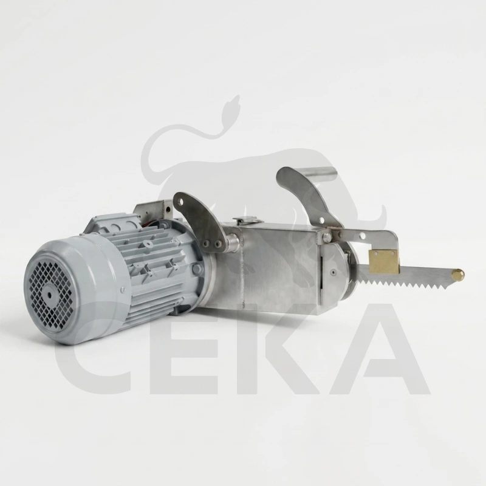
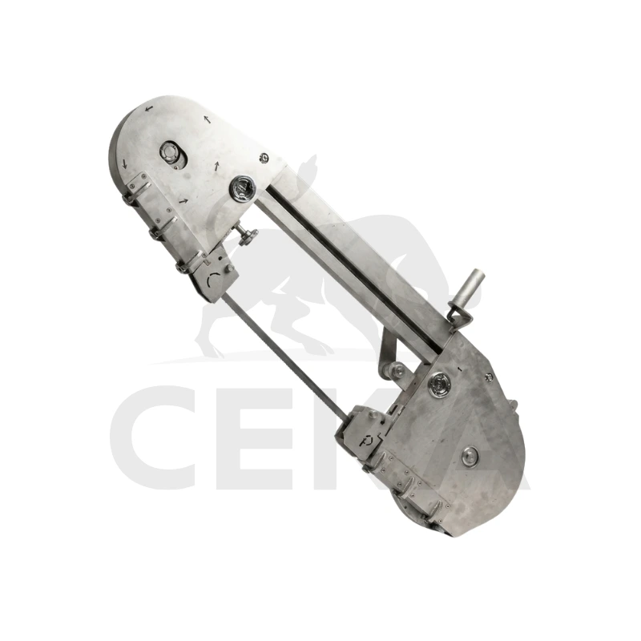
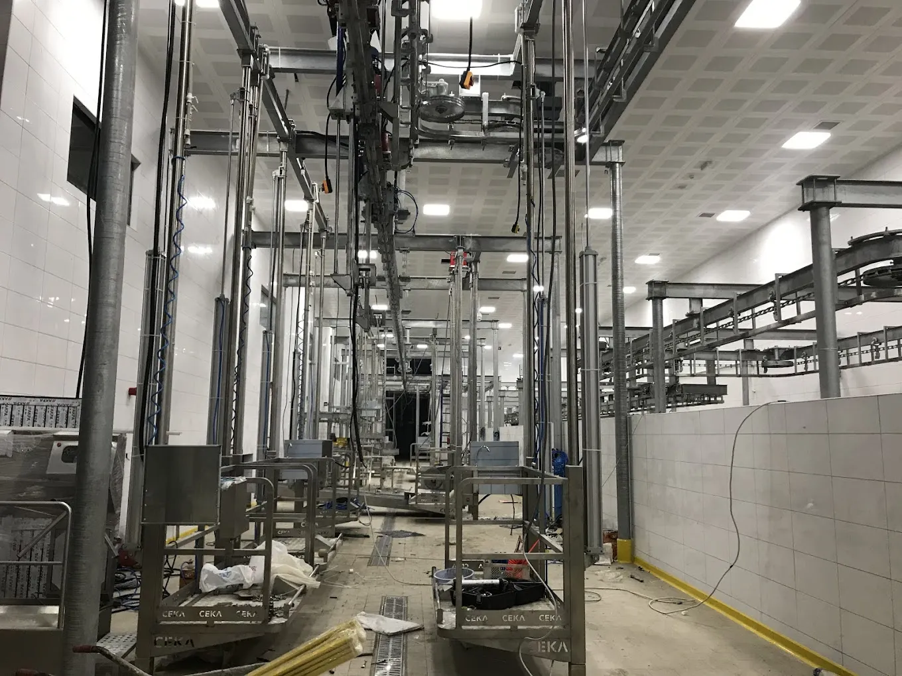
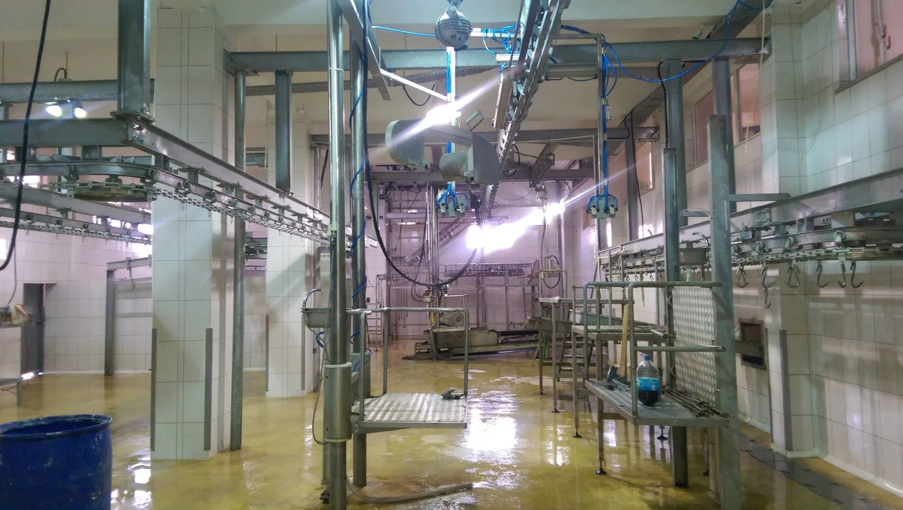
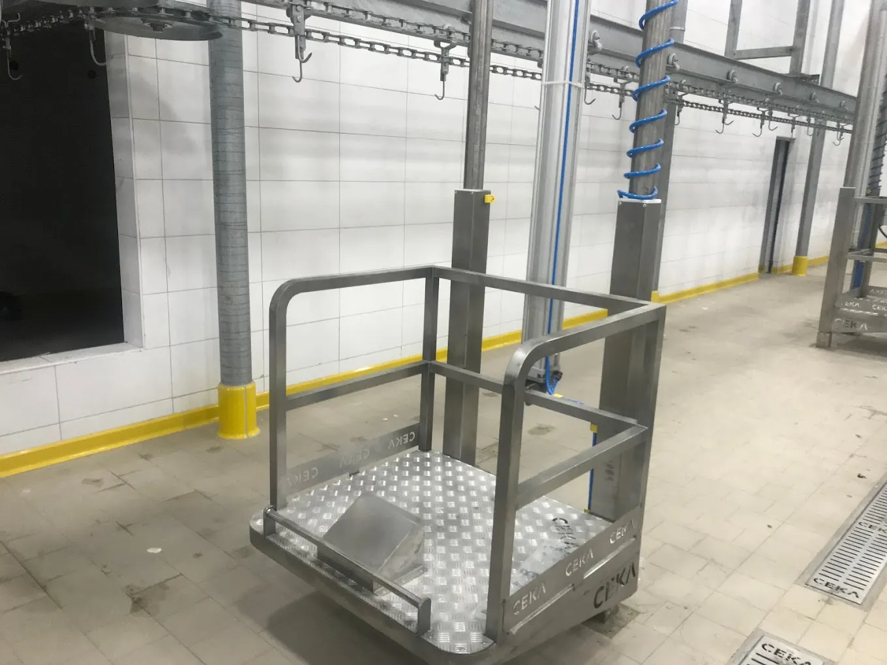

Parçalama ve Kesim Ekipmanı
Döş açma testeresi, büyükbaş kesim hattında göğüs kemiğinin kontrollü şekilde açılması için kullanılan özel kesim ekipmanıdır. Düzenli kesim hattı oluşturur, operatörün yönlendirmesini kolaylaştırır ve karkasın sonraki işlem adımlarına daha temiz aktarılmasına yardımcı olur.
Döş açma makinası olarak da anılan bu çözüm, kesim başlığının dengeli yapısı, rijit tutuş geometrisi ve kontrollü ileri besleme karakteri sayesinde göğüs açma işlemini daha stabil hale getirir. Islak ve yoğun çalışma alanlarında güvenli kullanım için mekanik gövde ve koruyucu parçalar birlikte düşünülür.
Kesici ünitenin motor-tahrik yapısı, çalışma sırasında titreşimi kontrol altında tutacak şekilde kompakt bir gövde içinde çözülür. Kol, kavrama ve yön verme noktaları operatörün kesim çizgisini rahat takip etmesine imkan verir; böylece hem hız hem de kesim doğruluğu korunur.
Paslanmaz temas yüzeyleri, temizliğe açık mekanik birleşimler ve kolay servis erişimi sayesinde bakım süreci sadeleşir. Döş açma testeresi; parçalama platformu, askı hattı ve büyükbaş işleme istasyonlarıyla projeye göre entegre edilerek üretilebilir.
Büyükbaş hat kurulumunda bu ürünü büyükbaş kesim ekipmanları ve parçalama ekipmanları ile birlikte değerlendirmek, daha uyumlu ve verimli bir istasyon kurulmasına yardımcı olur.
| Özellik | Değer |
|---|---|
| Ürün | Döş Açma Testeresi |
| Kullanım Alanı | Büyükbaş göğüs açma ve parçalama hattı |
| Kesim Tipi | Kontrollü lineer göğüs açma |
| Tahrik Yapısı | Elektrik motorlu kesim ünitesi |
| Gövde Yapısı | Paslanmaz temas yüzeyleri ve dayanıklı koruyucu gövde |
| Kesim Başlığı | Yönlendirmeli ve dengeli testere kafası |
| Tutuş ve Denge | Ergonomik kavrama ve kontrollü ağırlık merkezi |
| Temizlik | Kolay erişilebilir yüzeyler ve bakım noktaları |
| Bakım | Bıçak ve servis parçalarına pratik erişim |
| Hat Uyumu | Parçalama platformu ve büyükbaş işleme hattına uyumlu |
| Üretim Şekli | Projeye göre ölçülendirme ve konfigürasyon |
| Operasyon | Operatör yönlendirmeli kontrollü kesim |
| Endüstriyel Kullanım | Mezbaha ve et işleme tesisleri |

Parçalama İstasyonu Uyumu

Hat İçinde Çalışma Düzeni

Operasyon Alanı Yerleşimi

Platform Entegrasyonu
Döş açma testeresi; büyükbaş kesim hattı, göğüs açma istasyonu, parçalama platformu ve karkas işleme alanlarında kullanılır. Kontrollü göğüs açma sayesinde sonraki istasyonlara daha düzenli ürün akışı sağlar.
Dengeli kesim başlığı, rijit kavrama yapısı, servis erişimine açık gövde ve paslanmaz temas yüzeyleri sayesinde operatör kontrolünü güçlendirir. Bu da hem kesim standardını hem günlük kullanım güvenliğini artırır.
Bu ürün çoğunlukla karkas bölme testeresi, parçalama platformu, büyükbaş kesim ekipmanları ve hijyen istasyonlarıyla birlikte planlanır. Hat bütünlüğü ürün performansı kadar önemlidir.
Göğüs kemiğinin kontrollü açılmasını sağlar. Bu sayede karkasın ilerleyen işlem adımlarına daha düzenli ve temiz geçişi mümkün olur.
Büyükbaş kesim hattı bulunan mezbaha ve et işleme tesislerinde kullanılır. Parçalama ve karkas hazırlık istasyonlarıyla birlikte düşünülür.
Paslanmaz yüzeyler, açık erişim sağlayan bakım noktaları ve servis dostu mekanik yapı sayesinde günlük temizlik ve periyodik bakım daha rahat uygulanır.
Döş açma testeresi için teknik detay, hat uyumu ve projeye özel üretim seçenekleri hakkında bilgi almak üzere bizimle iletişime geçin.
İletişime Geç